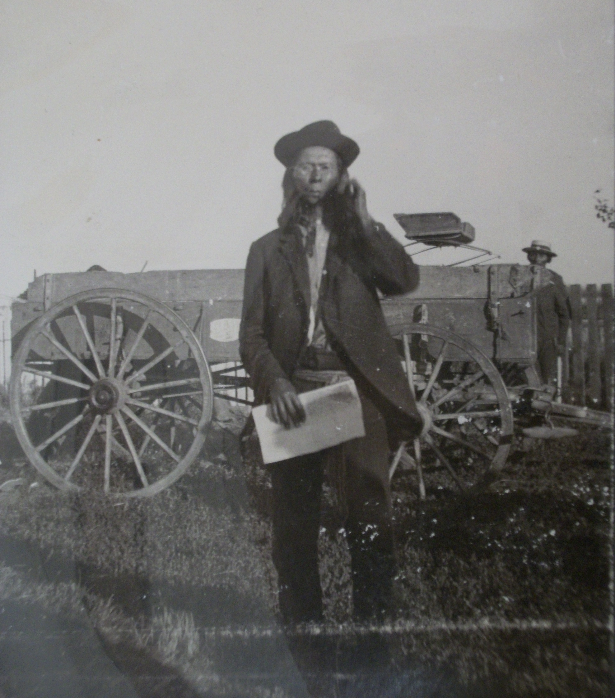

By Gladys Johnston
|  |
| A photograph of Jacob Johnson, a Metis man with round spectacles and a sash around his waist, at Snake Plains during the time of the visit of the Half-Breed Commission, 1900. Saskatchewan Archives Board |
In 1866 Jacob Johnstone was shot in the face by a Sarcee when he was fifteen years old. The wound shattered his jaw and in keeping with Indian custom he was called Broken Jaw. He was rewarded for his bravery by being named a chief by Mistawasis. About 1940 or 05 he was named chief of the Mistawasis Band. He last became a medicine man and an elder in the Presbyterian church. He died on 22nd of February, 1931 at the age of 80.